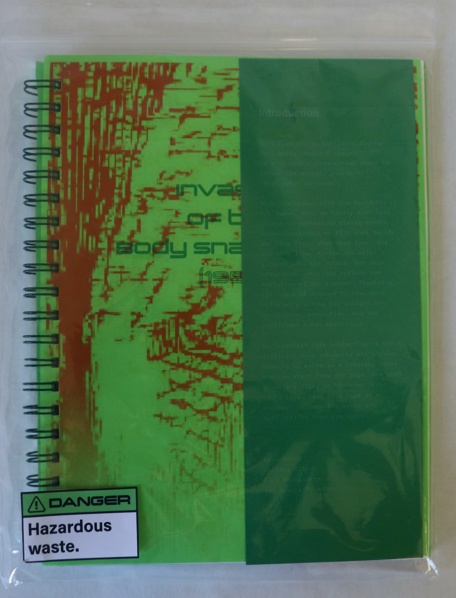
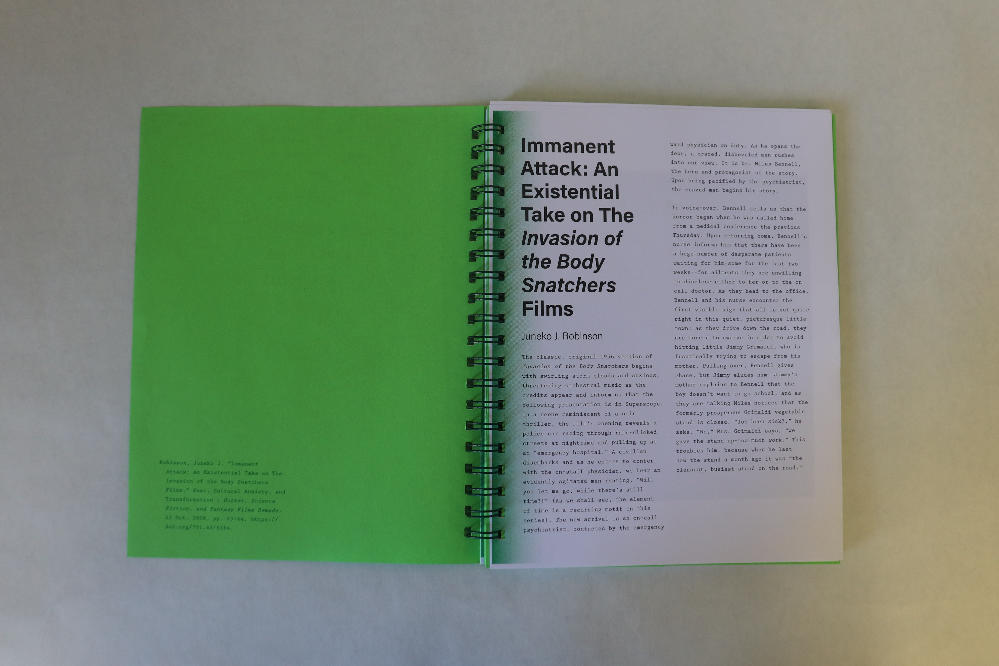
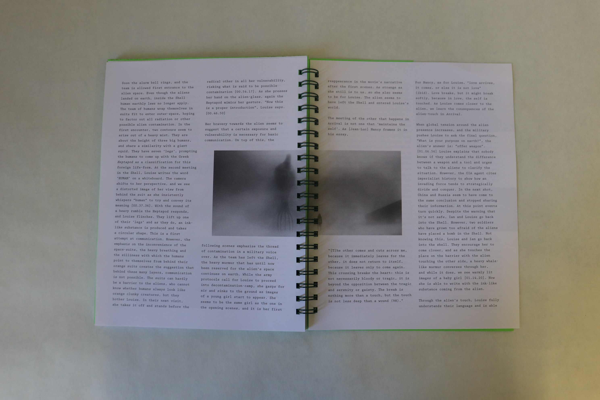
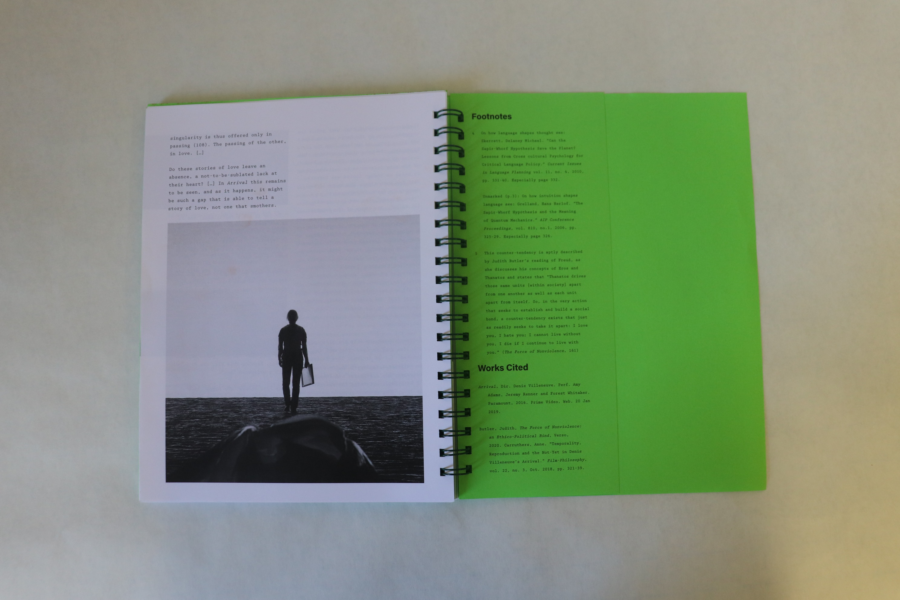

Please view this page on mobile, or return to homepage by clicking the above logo. Desktop page in progress.
Please view this page on mobile, or return to homepage by clicking the above logo. Desktop page in progress.
A hand-bound physical compilation of academic essays and papers centering around the themes of artificial intelligence in film. The book aims to explore artists' many evolving viewpoints surrounding artificial intelligence throughout film's history. Created in collaboration with Zach Montgomery, Lareina Alred, and Kyra Baron.




